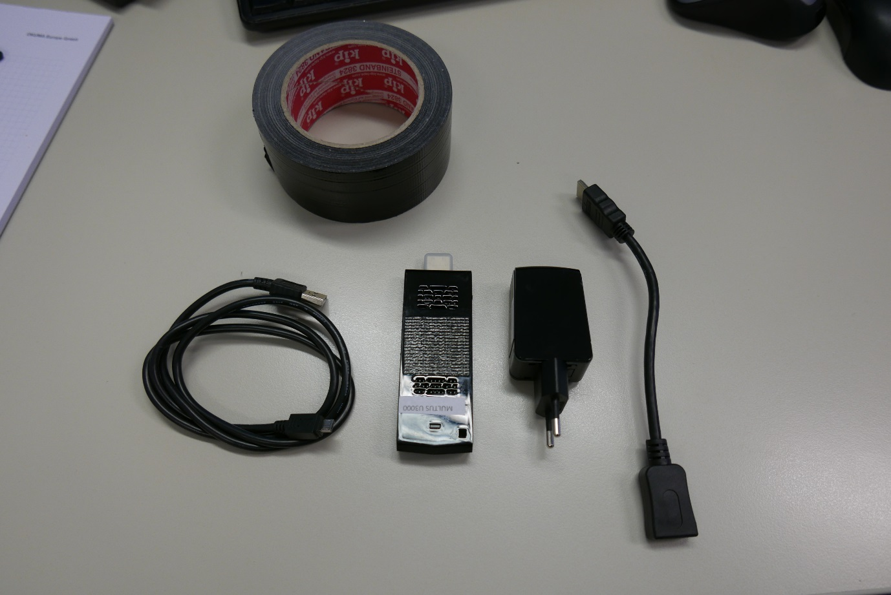
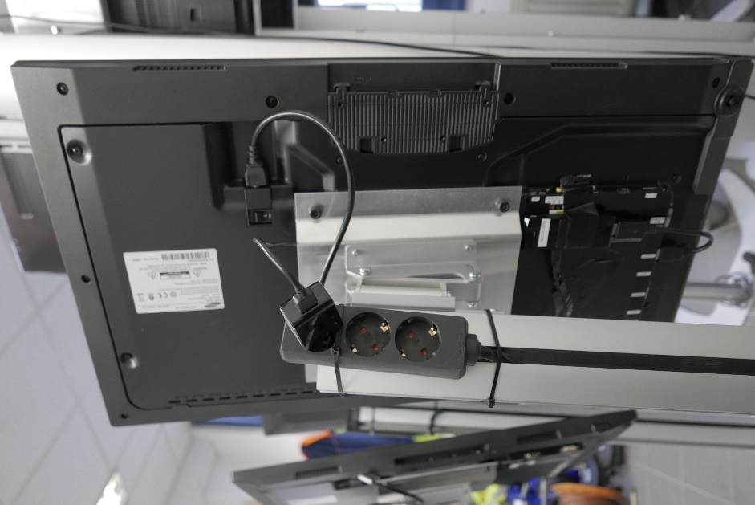
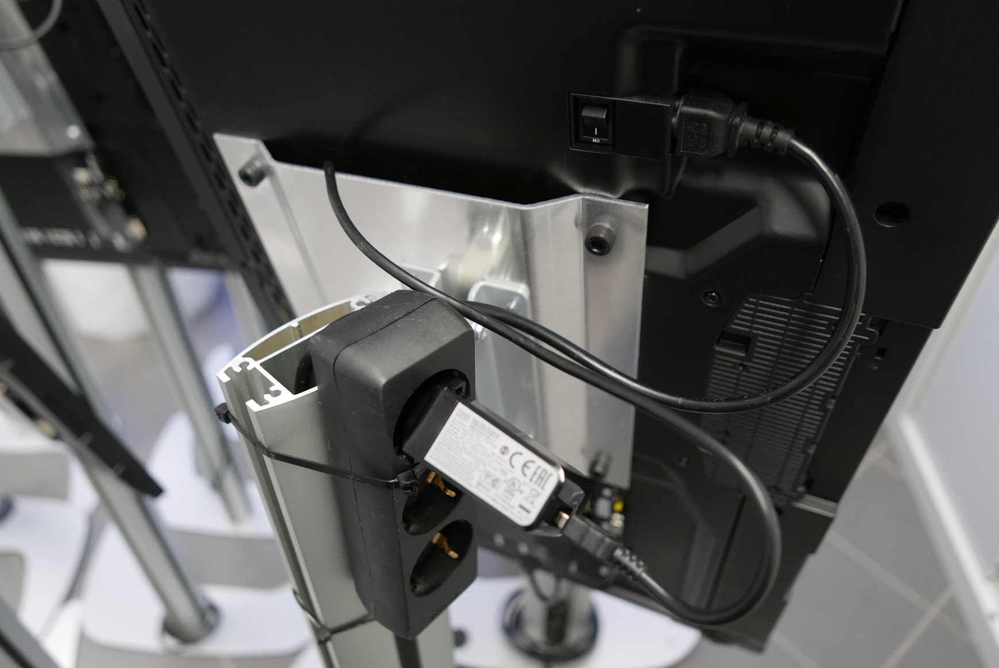
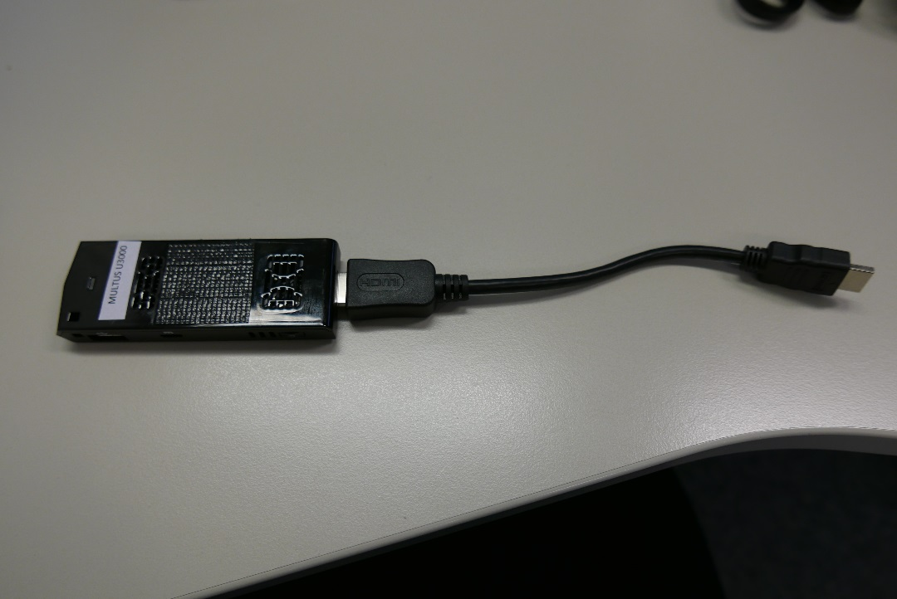
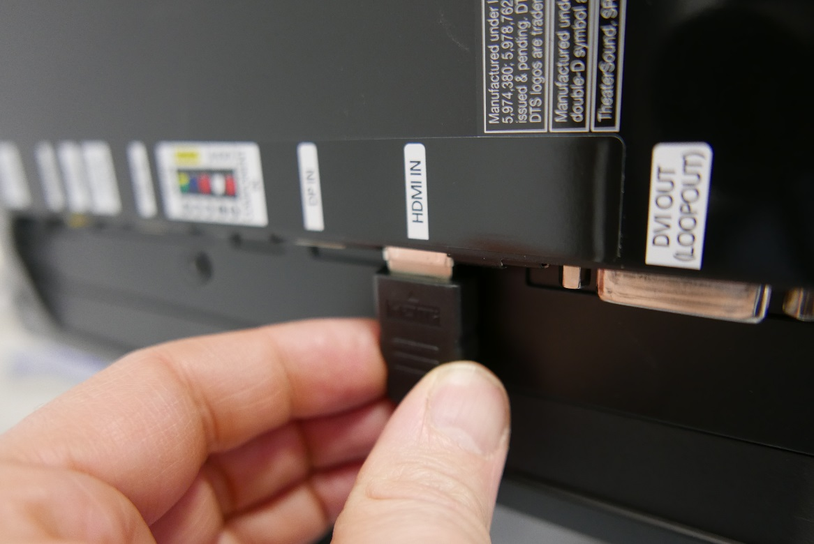
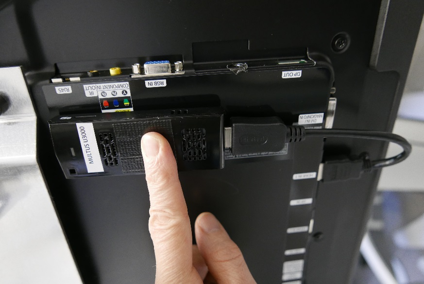
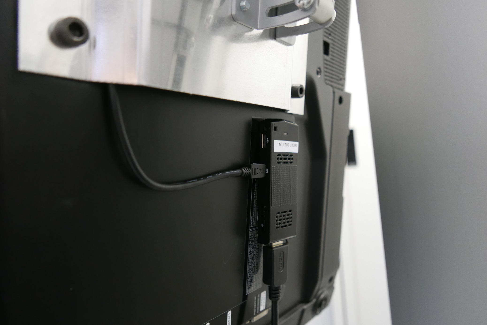
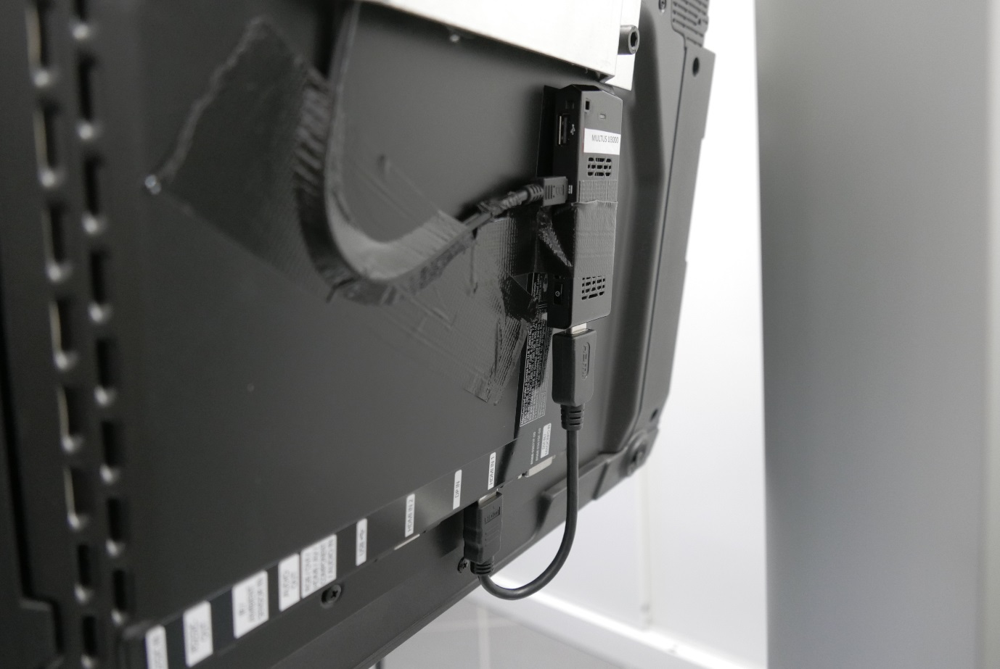

Mini-PC installation guide
Required items
- Mini-PC
- USB AC adapter
- USB cable
- HDMI cable
- Duct tape

Completed installation

Installation
- Plug-in the AC adapter.
-
Connect the USB cable and the AC adapter.

-
Lead the USB cable behind the monitor fixing plate.
-
Connect HDMI cable and Stick-PC

-
Connect Stick-PC and Monitor by the HDMI cable.


-
Connect USB cable and the Stick-PC.

-
Fix the Stick-PC and the USB cable securely by duct tape.

-
Keep the ventilation slots open!